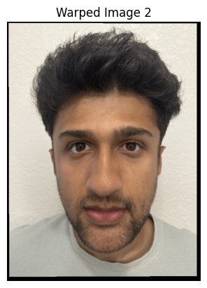
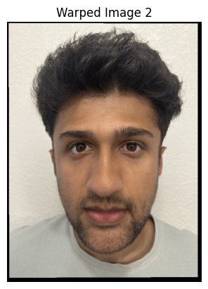
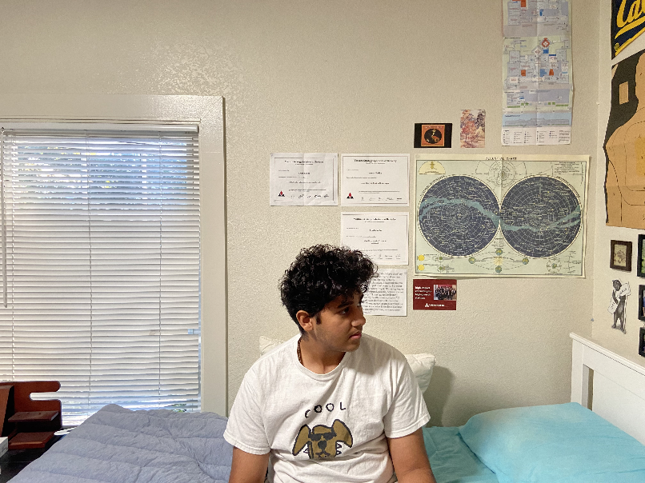
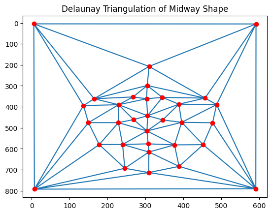
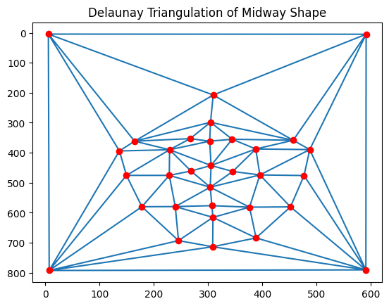
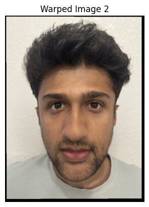

The homography matrix is found using the point correspondences. A system of linear equations is set up and solved, and the output is the 3x3 matrix. Below are the eqations used.
\[ \begin{align*} A &= \begin{bmatrix} -x_{\text{pts}} & -y_{\text{pts}} & -1 & 0 & 0 & 0 & x_{\text{pts}} \cdot x_{B\text{pts}} & y_{\text{pts}} \cdot x_{B\text{pts}} & x_{B\text{pts}} \\ 0 & 0 & 0 & -x_{\text{pts}} & -y_{\text{pts}} & -1 & x_{\text{pts}} \cdot y_{B\text{pts}} & y_{\text{pts}} \cdot y_{B\text{pts}} & y_{B\text{pts}} \end{bmatrix} \end{align*} \]
 

This part defines the compute_affine and inversewarp functions, including others. Both the resized images are used, as well as the triangulations, to create the mid-way face. The affine function translates the images to the midway points found in the triangulation, and then an inverse warp is called on the same. Then, the images are cross dissolved to give the right colours. All the results are displayed below, including the warped images + the midway face.

To make the morph sequence, the code generates frames by varying warp_frac and dissolve_frac parameters from 0 to 1. The midway face would have values of 0.5 for both parameters. Frames are generated and appended to the "frames" array with the same method as the midway face. The gif produced contains 45 frames, with the first and last frames being the original images 1 and 2 respectively

This part involved loading all the data from the Danes dataset, which has 37 images. From this, the points were loaded into an array and then the average face was computed with the same method as before.
Below shown are images of my face warped onto the average geometry and the average geometry warped onto me.
Here are examples from the database morphed onto the average face

The Caricatures are produced by shifting the points in the original image with the formula a + k*(a - b). The original image is then morphed into this to create the final image.
For this, I morphed my image onto the average Indian woman (which I found on the web) using the same triangulation and warping method as before. You can see the features change, ranging from skin color to eyes and eyebrows etc...

I have taken some inspiration from ChatGPT and pretrained LLM's to create the structure for some parts of the website.
Back to Main Page